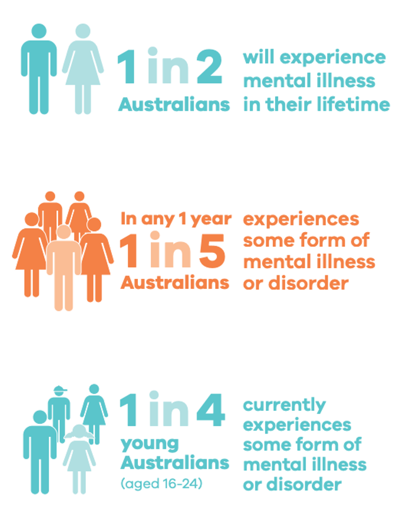

Understanding mental healthCommon mental health concerns for young people are anxiety, depression, eating disorders, drug and alcohol use, feeling unsafe, discrimination, and bullying.
|
Examining relevant statistics and trends.
|
|
Services
There are many free mental health hotlines and mental health online support services across Victoria, which provide crisis support, information, resources, counselling and therapy to people of all ages.
Services include (but not limited to): Beyondblue, Mensline Australia, Anxiety Recovery Centre Victoria (ARCVic), Direct Line and Relationships Australia
|
 |